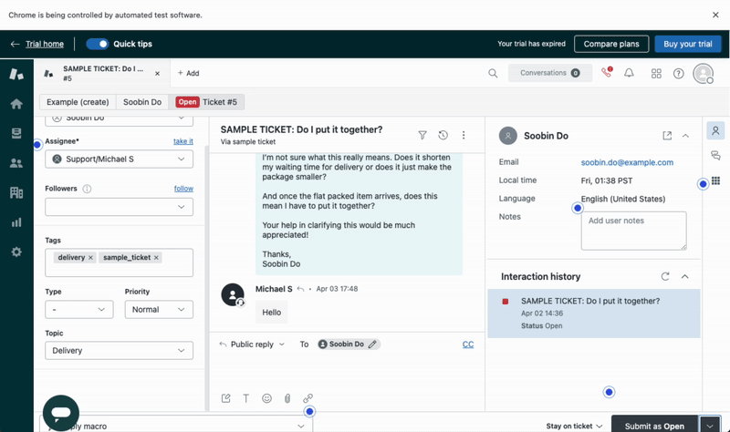
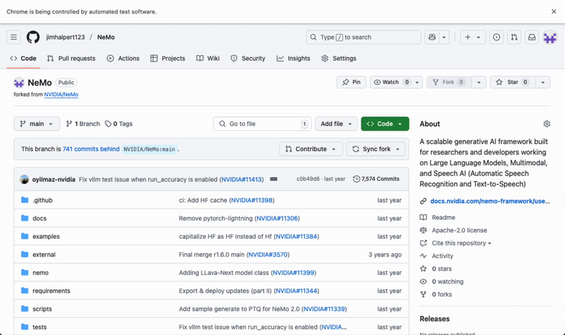
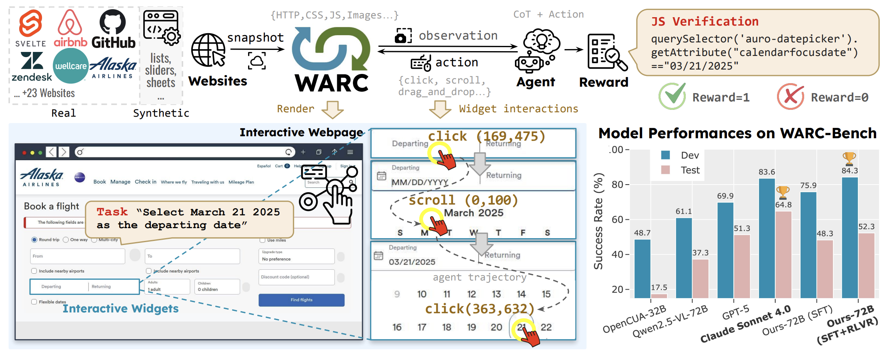

Overview
Examples of WARC-based Environments

ZenDesk - Customer support interface navigation

GitHub - Repository navigation and interaction

Complex form filling with validation

Calendar picker interaction
Training web agents to navigate complex, real-world websites requires them to master subtasks—short-horizon interactions on multiple UI components (e.g., choosing the correct date in a date picker, or scrolling in a container to extract information). We introduce WARC-Bench (Web Archive Benchmark), a novel web navigation benchmark featuring 438 tasks designed to evaluate multimodal AI agents on subtasks.
WARC-Bench enables sandboxed interactions with dynamic and realistic webpages using Web ARChive files, ensuring reproducible evaluation on real-world web content. We show that WARC-Bench is challenging for leading computer-use models, with the highest observed success rate being 64.8%.
To improve open source models on subtasks, we explore two common training techniques: supervised fine-tuning (SFT) and reinforcement learning with verifiable rewards (RLVR). Experiments show that SFT models obtain a 48.8% success rate on the benchmark. Training with RLVR over SFT checkpoints, even in data-scarce settings, improves the score to 52.8% on WARC-Bench, outperforming many frontier models.

Why WARC-Bench?
Existing web navigation benchmarks primarily focus on end-to-end task completion, but overlook the fundamental building blocks: subtask execution. Mastering these subtasks is essential for robust web planning and navigation, yet this capability has not been extensively evaluated.
WARC-Bench addresses this gap by:
- Reproducible evaluation: Using web archive files ensures consistent testing conditions, eliminating website changes and availability issues
- Real-world complexity: Tasks based on actual websites with dynamic JavaScript, complex layouts, and diverse interaction patterns
- Verifiable rewards: Tasks use programmatic checks to determine completion, enabling automatic evaluation and reinforcement learning with reliable reward signals
- Granular assessment: Focus on individual subtasks reveals specific weaknesses in agent capabilities
- Training infrastructure: Complete pipeline for supervised fine-tuning and reinforcement learning with verifiable rewards
- Scalable design: Tools for extending the benchmark by recording and adding new web archive files
What are Subtasks?
Subtasks are fundamental, short-horizon interactions that agents must master to navigate real-world websites effectively. Examples include:
- Date pickers: Selecting specific dates across various calendar UI designs
- Scrolling containers: Extracting information by scrolling within specific page elements
- Dropdown menus: Navigating and selecting from complex multi-level dropdowns
- Form interactions: Filling out forms with proper validation and error handling
- Dynamic content: Interacting with JavaScript-heavy components that update asynchronously
These capabilities form the building blocks for more complex web navigation tasks.
Performance Results
We evaluate both frontier closed-source models and our trained open-source models on WARC-Bench. The results reveal significant challenges even for state-of-the-art systems:
| Model | Dev Success Rate | Test Success Rate |
|---|---|---|
| Claude Sonnet 4.0 (2025-05-14) | 83.61% | 64.8% |
| Ours-72B-SFT | 75.9% | 48.8% |
| Ours-72B-RLVR (SFT+RLVR) | 84.3% | 52.8% |
Key Findings
- Challenging for frontier models: Even Claude Sonnet 4.0 achieves only 64.8% on the test set, showing substantial room for improvement
- RLVR improves over SFT: Reinforcement learning with verifiable rewards boosts performance from 48.8% to 52.8%, demonstrating the value of reward-based training even in data-scarce settings
- Open-source potential: Our trained models can outperform many frontier systems on specific subtasks, showing promise for specialized open-source agents
Quick Start
# Clone the repository
git clone https://github.com/sanjari-orb/warc-bench.git
cd warc-bench
# Install in editable mode
pip install -e .
# Run benchmark evaluation
python scripts/run_eval.py scripts/eval_configs/subtask.yaml
# View agent trajectories with interactive web UI
streamlit run scripts/trajectory_viewer.pyCitation
If you use WARC-Bench in your research, please cite:
@misc{srivastava2025warcbenchwebarchivebased,
title={WARC-Bench: Web Archive Based Benchmark for GUI Subtask Executions},
author={Sanjari Srivastava and Gang Li and Cheng Chang and Rishu Garg and Manpreet Kaur and Charlene Y. Lee and Yuezhang Li and Yining Mao and Ignacio Cases and Yanan Xie and Peng Qi},
year={2025},
eprint={2510.09872},
archivePrefix={arXiv},
primaryClass={cs.LG},
url={https://arxiv.org/abs/2510.09872},
}